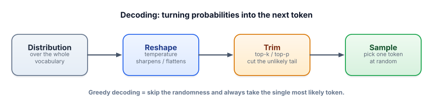
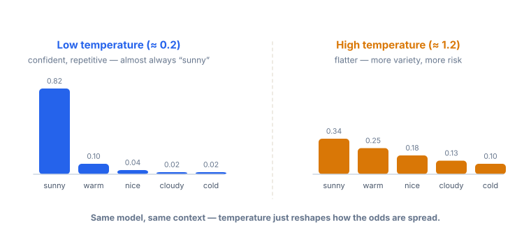

Sampling & decoding
The model hands you a probability for every possible next token. Choosing one is a separate step with its own knobs — temperature, top-k, top-p. These are the settings you’ll tune most often, and the difference between a reliable extractor and a creative writer is often just these numbers.
Why this is a separate, tunable step
In Lesson 1.1 we glossed over “pick one token.” That picking — called decoding or sampling — is where you get control. The exact same model on the exact same prompt can give a different answer each time, or the same answer every time, depending entirely on how you choose from its distribution. Want deterministic data extraction? Want a brainstorm of ten different taglines? Same model — different decoding settings.

Greedy decoding: always take the single highest-probability token. Deterministic, but can be flat and repetitive.
Temperature: a dial that reshapes the distribution before sampling. Low temperature (→0) sharpens it toward the top token (more deterministic); high temperature (>1) flattens it (more variety, more risk of nonsense).
Top-k: only consider the k most likely tokens; throw away the rest of the tail before sampling.
Top-p (also called nucleus sampling): consider the smallest set of top tokens whose probabilities add up to at least p (e.g. 0.9). Adapts automatically — few tokens when the model is confident, more when it’s unsure.
Temperature is the one you’ll reach for most. Here’s the whole idea in a picture — same model, same context, only the temperature changes:

Play with all three at once
This is the best way to build intuition. Move the sliders and watch the distribution reshape and the tail get cut. Then hit “Sample 20×” to feel how often each token actually gets chosen.
Sampling playground
Context: “The weather today is ___”. Order applied: temperature → top-k → top-p → sample.
Which settings for which job
| Task | Sensible starting point | Why |
|---|---|---|
| Data extraction, classification, JSON output | temperature 0 (greedy) | You want the same, most-likely answer every time — determinism and consistency beat creativity. |
| Factual Q&A, summarization | temperature 0–0.3 | Low randomness keeps it grounded and reduces invented details. |
| Code generation | temperature 0–0.4 | Code mostly has “correct” continuations; low temperature avoids creative-but-broken syntax. |
| Brainstorming, marketing copy, variety | temperature 0.7–1.0, top-p 0.9 | You want diversity; flatter sampling explores more options. |
Run a small open model locally and watch temperature change its style (downloads a free model the first time; no API key):
!pip install transformers
from transformers import pipeline, set_seed
gen = pipeline("text-generation", model="gpt2") # small, free
prompt = "The best way to learn programming is"
set_seed(42)
print("LOW temp 0.2:", gen(prompt, max_new_tokens=25, do_sample=True, temperature=0.2)[0]["generated_text"])
set_seed(42)
print("HIGH temp 1.3:", gen(prompt, max_new_tokens=25, do_sample=True, temperature=1.3)[0]["generated_text"])The low-temperature run stays safe and predictable; the high-temperature run wanders into more unusual (and sometimes incoherent) territory. That trade-off — coherence vs. creativity — is exactly what you’re dialing.
Reproducibility: if you need the same output every run (for tests, or debugging a prompt), use temperature 0 / greedy, and where available a fixed seed (the starting point for the randomness). Even then, exact determinism across hardware isn’t always guaranteed.
Don’t fight on two fronts: people often crank temperature and tighten top-p at once and get confused. Start by tuning temperature alone; reach for top-p/top-k only when you specifically want to cap the weird tail while keeping some randomness.
- Decoding is a separate, tunable step from the model: same distribution, different ways to pick.
- Greedy = always the top token (deterministic). Temperature sharpens (low) or flattens (high) the odds.
- Top-k keeps the k most likely tokens; top-p keeps the smallest set summing to p (adapts to confidence).
- Use low temperature for facts/code/JSON, higher for brainstorming/variety.
- For reproducible outputs, use temperature 0 (and a seed if available).
You’re building a feature that extracts a customer’s order number from an email into a fixed field. Sometimes it returns the right number, sometimes a slightly different made-up one. Which change most directly helps?
You need the same answer every time for a data-extraction task. What temperature?
1. In the playground, set top-k = 1. What does the output distribution become, and which “knob value” of temperature is this equivalent to?
2. You want a model to write 5 genuinely different opening lines for a story. What decoding settings would you pick, and why?
3. A teammate sets temperature 0 but still sees different answers across runs for a creative task. Give one reason this can happen and one thing to check.
▸ Show solutions & reasoning
1. Top-k = 1 keeps only the single most likely token, so the “distribution” collapses to a 100% spike on that token — the model becomes deterministic. That’s exactly greedy decoding, the same effect as temperature → 0. Two different knobs, same destination, which is a nice way to see that these controls overlap.
2. Use a higher temperature (≈0.8–1.0), optionally top-p ≈ 0.9 to keep the variety sane, and generate 5 separate completions. The higher temperature spreads probability so each run explores different tokens; top-p trims only the truly unlikely tail so you get varied rather than broken. (Asking for all five in one response also helps the model make them distinct.)
3. Temperature 0 means “take the top token,” but if two tokens are nearly tied, tiny numerical differences (or different hardware/runs) can flip which one wins, and that divergence compounds over a long generation. Check whether a seed is set and supported, and remember exact determinism isn’t guaranteed across environments — for tests, assert on structure/keys rather than exact wording.
The model’s raw outputs aren’t probabilities — they’re scores called logits. They’re turned into probabilities by the softmax function, which exponentiates each logit and divides by the total so everything sums to 1. Temperature slips in as a divisor on the logits before softmax: each logit becomes logit / T.
That single division explains everything you saw. When T is small (say 0.2), dividing makes the logits larger and more spread out, so after exponentiating, the biggest one dominates — a peaky distribution. When T is large (say 1.5), dividing squashes the logits together, so the probabilities flatten toward uniform. As T → 0 the top token’s probability heads to 1 (greedy); as T grows, you approach picking uniformly at random. Top-k and top-p then act after softmax, simply zeroing out tokens — top-k by rank, top-p by cumulative mass — before you sample. Knowing this, you can predict the effect of any setting instead of guessing, which is the whole point of understanding the engine.
One lesson left in this track, and it’s the one that keeps you honest on the job: what these models genuinely can and can’t do — including why they hallucinate, and what to do about it.